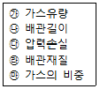
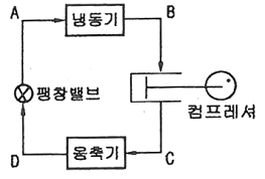
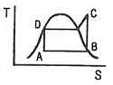
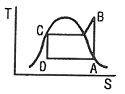
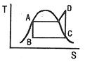
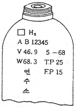
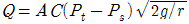
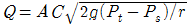
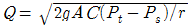
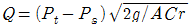

가스산업기사 (2016-05-08 기출문제)
1과목: 연소공학
1. 다음 중 기상 폭발에 해당되지 않는 것은?
- 혼합가스폭발
- 분해폭발
- 증기폭발
- 분진폭발
(정답률: 60%)

2. 비열기관에서 온도 10℃의 엔탈피 변화가 단위중량당 100kcal일 때 엔트로피 변화량(kcal/kg·K)은?
- 0.35
- 0.37
- 0.71
- 10
(정답률: 58%)
3. 내압방폭구조로 방폭전기기기를 설계할 때 가장 중요하게 고려해야 할 사항은?
- 가연성가스의 발화점
- 가연성가스의 연소열
- 가연성가스의 최대안전틈새
- 가연성가스의 최소 점화에너지
(정답률: 91%)
4. 가스의 폭발범위(연소범위)에 대한 설명 중 옳지 않은 것은?
- 일반적으로 고압일 경우 폭발범위가 더 넓어진다.
- 수소와 공기 혼합물의 폭발범위는 저온보다 고온일 때 더 넓어진다.
- 프로판과 공기 혼합물에 질소를 더 가할 때 폭발범위가 더 넓어진다.
- 메탄과 공기 혼합물의 폭발범위는 저압보다 고압일 때 더 넓어진다.
(정답률: 86%)
5. 층류확산화염에서 시간이 지남에 따라 유속 및 유량이 증대할 경우 화염의 높이는 어떻게 되는가?
- 높아진다.
- 낮아진다.
- 거의 변화가 없다.
- 처음에는 어느 정도 낮아지다가 점점 높아진다.
(정답률: 67%)
6. 시안화수소를 장기간 저장하지 못하는 주된 이유는?
- 산화폭발
- 분해폭발
- 중합폭발
- 분진폭발
(정답률: 92%)
7. 상용의 상태에서 가연성가스가 체류해 위험하게 될 우려가 있는 장소를 무엇이라 하는가?
- 0종 장소
- 1종 장소
- 2종 장소
- 3종 장소
(정답률: 81%)
8. 자연발화온도(Autoignition temperature : AIT)에 영향을 주는 요인에 대한 설명으로 틀린 것은?
- 산소량의 증가에 따라 AIT는 감소한다.
- 압력의 증가에 의하여 AIT는 감소한다.
- 용량의 크기가 작아짐에 따라 AIT는 감소한다.
- 유기화합물의 동족열 물질은 분자량이 증가할수록 AIT는 감소한다.
(정답률: 71%)
9. 프로판 가스의 연소과정에서 발생한 열량이 13000kcal/ kg, 연소할 때 발생된 수증기의 잠열이 2500kcal/kg 이면 프로판 가스의 연소효율(%)은 약 얼마인가? (단, 프로판 가스의 진발열량은 11000kcal/kg이다.)
- 65.4
- 80.8
- 92.5
- 95.4
(정답률: 55%)
10. 융점이 낮은 고체연료가 액상으로 용융되어 발생한 가연성 증기가 착화하여 화염을 내고, 이 화염의 온도에 의하여 액체표면에서 증기의 발생을 촉진시켜 연소를 계속해 나가는 연소형태는?
- 증발연소
- 분무연소
- 표면연소
- 분해연소
(정답률: 72%)
11. 다음 중 질소산화물의 주된 발생원인은?
- 연소실 온도가 높을 때
- 연료가 불완전연소할 때
- 연료 중에 질소분의 연소 시
- 연료 중에 회분이 많을 때
(정답률: 57%)
12. 탄소 1mol이 불완전연소하여 전량 일산화탄소가 되었을 경우 몇 mol이 되는가?
- 1/2
- 1
- 1½
- 2
(정답률: 74%)
13. 폭굉유도거리(DID)에 대한 설명으로 옳은 것은?
- 관경이 클수록 짧다.
- 압력이 낮을수록 짧다.
- 점화원의 에너지가 약할수록 짧다.
- 정상연소 속도가 빠른 혼합가스일수록 짧다.
(정답률: 78%)
14. 다음 중 염소폭명기의 정의로 옳은 것은?
- 염소와 산소가 점화원에 의해 폭발적으로 반응하는 현상
- 염소와 수소가 점화원에 의해 폭발적으로 반응하는 현상
- 염화수소가 점화원에 의해 폭발하는 현상
- 염소가 물에 용해하여 염산이 되어 폭발하는 현상
(정답률: 85%)
15. 1기압, 40L의 공기를 4L 용기에 넣었을 때 산소의 분압은 얼마인가? (단, 압축 시 온도변화는 없고, 공기는 이상기체로 가정하며 공기 중 산소는 20%로 가정한다.)
- 1기압
- 2기압
- 3기압
- 4기압
(정답률: 73%)
16. 가연성 혼합기체가 폭발범위 내에 있을 때 점화원으로 작용할 수 있는 정전기의 방지대책으로 틀린 것은?
- 접지를 실시한다.
- 제전기를 사용하여 대전된 물체를 전기적 중성 상태로 한다.
- 습기를 제거하여 가연성 혼합기가 수분과 접촉하지 않도록 한다.
- 인체에서 발생하는 정전기를 방지하기 위하여 방전복 등을 착용하여 정전기 발생을 제거한다.
(정답률: 87%)
17. 가연성물질의 성질에 대한 설명으로 옳은 것은?
- 끓는점이 낮으면 인화의 위험성이 낮아진다.
- 가연성액체는 온도가 상승하면 점성이 약해지고 화재를 확대시킨다.
- 전기전도도가 낮은 인화성 액체는 유동이나 여과 시 정전기를 발생시키지 않는다.
- 일반적으로 가연성 액체는 물보다 비중이 작으므로 연소 시 축소된다.
(정답률: 73%)
18. 연료와 공기를 별개로 공급하여 연료와 공기의 경계에서 연소시키는 것으로서 화염의 안정범위가 넓고 조작이 쉬우며 역화의 위험성이 적은 연소방식은?
- 예혼합연소
- 분젠연소
- 전1차식연소
- 확산연소
(정답률: 50%)
19. 다음 연료 중 착화온도가 가장 높은 것은?
- 메탄
- 목탄
- 휘발유
- 프로판
(정답률: 70%)
20. 층류의 연소속도가 작아지는 경우는?
- 압력이 높을수록
- 비중이 작을수록
- 온도가 높을수록
- 분자량이 작을수록
(정답률: 58%)
2과목: 가스설비
21. 기지국에서 발생된 정보를 취합하여 통신선로를 통해 원격감시제어소에 실시간으로 전송하고, 원격감시제어소로부터 전송된 정보에 따라 해당 설비의 원격제어가 가능하도록 제어신호를 출력하는 장치를 무엇이라 하는가?
- Master Station
- Communication Unit
- Remote Terminal Unit
- 음성경보장치 및 Map Board
(정답률: 83%)
22. 프로판(C3H8)과 부탄(C4H10)의 몰비가 2 : 1인 혼합가스가 3atm(절대압력), 25℃로 유지되는 용기 속에 존재할 때 이 혼합 기체의 밀도는? (단, 이상 기체로 가정한다.)
- 5.40g/L
- 5.98g/L
- 6.55g/L
- 17.7g/L
(정답률: 60%)
23. 내용적 10m3의 액화산소 저장설비(지상설치)와 제1종 보호시설과 유지해야 할 안전거리는 몇 m인가? (단, 액화산소의 비중은 1.14이다.)
- 7
- 9
- 14
- 21
(정답률: 64%)
24. 가스 배관의 구경을 산출하는 데 필요한 것으로만 짝지어진 것은?

- ㉮, ㉯, ㉰, ㉱
- ㉯, ㉰, ㉱, ㉲
- ㉮, ㉯, ㉰, ㉲
- ㉮, ㉯, ㉱, ㉲
(정답률: 85%)
25. 배관의 기호와 그 용도 및 사용조건에 대한 설명으로 틀린 것은?
- SPSS 는 350℃ 이하의 온도에서, 압력 9.8 N/mm2 이하에 사용된다.
- SPPH 는 450℃ 이하의 온도에서, 압력 9.8 N/mm2 이하에 사용된다.
- SPLT는 빙점 이하의 특히 낮은 온도의 배관에 사용한다.
- SPPW는 정수두 100m 이하의 급수배관에 사용한다.
(정답률: 79%)
26. 동일한 가스 입상배관에서 프로판가스와 부탄가스를 흐르게 할 경우 가스자체의 무게로 인하여 입상관에서 발생 하는 압력손실을 서로 비교하면? (단, 부탄 비중은 2, 프로판 비중은 1.5이다.)
- 프로판이 부탄보다 약 2배 정도 압력손실이 크다.
- 프로판이 부탄보다 약 4배 정도 압력손실이 크다.
- 부탄이 프로판보다 약 2배 정도 압력손실이 크다.
- 부탄이 프로판보다 약 4배 정도 압력손실이 크다.
(정답률: 75%)
27. 작은 구멍을 통해 새어나오는 가스의 양에 대한 설명으로 옳은 것은?
- 비중이 작을수록 많아진다.
- 비중이 클수록 많아진다.
- 비중과는 관계가 없다.
- 압력이 높을수록 적어진다.
(정답률: 69%)
28. 염소가스 압축기에 주로 사용되는 윤활제는?
- 진한 황산
- 양질의 광유
- 식물성유
- 묽은 글리세린
(정답률: 81%)
29. 프로판 용기에 V : 47, TP : 31로 각인이 되어 있다. 프로판의 충전상수가 2.35일 때 충전량(kg)은?
- 10kg
- 15kg
- 20kg
- 50kg
(정답률: 77%)
30. 다음 [그림]의 냉동장치와 일치하는 행정 위치를 표시한 TS선도는?




(정답률: 71%)
31. 부식을 방지하는 효과가 아닌 것은?
- 피복한다.
- 잔류응력을 없앤다.
- 이종금속을 접촉시킨다.
- 관이 콘크리트 벽을 관통할 때 절연한다.
(정답률: 73%)
32. 가스액화분리장치의 구성요소에 해당되지 않는 것은?
- 한냉발생장치
- 정류장치
- 고온발생장치
- 불순물제거장치
(정답률: 63%)
33. LPG 저장설비 중 저온 저장탱크에 대한 설명으로 틀린 것은?
- 외부압력이 내부압력보다 저하됨에 따라 이를 방지하는 설비를 설치한다.
- 주로 탱커(tanker)에 의하여 수입되는 LPG를 저장하기 위한 것이다.
- 내부압력이 대기압 정도로서 강재 두께가 얇아도 된다.
- 저온액화의 경우에는 가스 체적이 적어 다량저장에 사용된다.
(정답률: 53%)
34. 나프타를 원료로 접촉분해 프로세스에 의하여 도시가스를 제조할 때 반응온도를 상승시키면 일어나는 현상으로 옳은 것은?
- CH4, CO2가 많이 포함된 가스가 생성된다.
- C3H8, CO2가 많이 포함된 가스가 생성된다.
- CO, CH4가 많이 포함된 가스가 생성된다.
- CO, H2가 많이 포함된 가스가 생성된다.
(정답률: 65%)
35. 고압가스 일반제조시설 중 고압가스설비의 내압시험압력은 상용압력의 몇 배 이상으로 하는가?
- 1
- 1.1
- 1.5
- 1.8
(정답률: 81%)
36. 아래 그림은 수소용기의 각인이다. Ⓐ V, Ⓑ TP, Ⓒ FP의 의미에 대하여 바르게 나타낸 것은?

- Ⓐ 내용적, Ⓑ 최고충전압력, Ⓒ 내압시험압력
- Ⓐ 총부피, Ⓑ 내압시험압력, Ⓒ 기밀시험압력
- Ⓐ 내용적, Ⓑ 내압시험압력, Ⓒ 최고충전압력
- Ⓐ 내용적, Ⓑ 사용압력, Ⓒ 기밀시험압력
(정답률: 87%)
37. 냉동장치에서 냉매가 냉동실에서 무슨 열을 흡수함으로써 온도를 강하시키는가?
- 융해잠열
- 용해열
- 증발잠열
- 승화잠열
(정답률: 75%)
38. 가스가 공급되는 시설 중 지하에 매설되는 강재배관에는 부식을 방지하기 위하여 전기적 부식방지조치를 한다. Mg-Anode를 이용하여 양극금속과 매설배관을 전선으로 연결하여 양극금속과 매설배관 사이의 전지작용에 의해 전기적 부식을 방지하는 방법은?
- 직접배류법
- 외부전원법
- 선택배류법
- 희생양극법
(정답률: 87%)
39. 지하매몰 배관에 있어서 배관의 부식에 영향을 주는 요인으로 가장 거리가 먼 것은?
- pH
- 가스의 폭발성
- 토양의 전기전도성
- 배관주위의 지하전선
(정답률: 76%)
40. 도시가스 공급시설에 해당되지 않는 것은?
- 본관
- 가스계량기
- 사용자 공급관
- 일반도시가스사업자의 정압기
(정답률: 63%)
3과목: 가스안전관리
41. 흡수식 냉동설비에서 1일 냉동능력 1톤의 산정기준은?
- 발생기를 가열하는 1시간의 입열량 3,320kcal
- 발생기를 가열하는 1시간의 입열량 4,420kcal
- 발생기를 가열하는 1시간의 입열량 5,540kcal
- 발생기를 가열하는 1시간의 입열량 6,640kcal
(정답률: 67%)
42. 고압가스 특정제조 시설에서 배관이 도로 밑 매설기준에 대한 설명으로 틀린 것은?
- 배관의 외면으로부터 도로의 경계까지 2m 이상의 수평 거리를 유지한다.
- 배관은 그 외면으로부터 도로 밑의 다른 시설물과 0.3m 이상의 거리를 유지한다.
- 시가지 도로노면 밑에 매설할 때는 노면으로부터 배관의 외면까지의 깊이를 1.5m 이상으로 한다.
- 포장되어 있는 차도에 매설하는 경우에는 그 포장부분의 노반 밑에 매설하고 배관의 외면과 노반의 최하부와의 거리는 0.5m 이상으로 한다.
(정답률: 57%)
43. 시안화수소를 용기에 충전한 후 정치해 두어야 할 기준은?
- 6시간
- 12시간
- 20시간
- 24시간
(정답률: 85%)
44. LPG사용시설에서 충전질량이 500kg인 소형저장탱크를 2개 설치하고자 할 때 탱크 간 거리는 얼마 이상을 유지 하여야 하는가?
- 0.3m
- 0.5m
- 1m
- 2m
(정답률: 42%)
45. 가스공급자가 수요자에게 액화석유가스를 공급할 때에는 체적판매방법으로 공급하여야 한다. 다음 중 중량판매 방법으로 공급할 수 있는 경우는?
- 1개월 이내의 기간 동안만 액화석유가스를 사용하는 자
- 3개월 이내의 기간 동안만 액화석유가스를 사용하는 자
- 6개월 이내의 기간 동안만 액화석유가스를 사용하는 자
- 12개월 이내의 기간 동안만 액화석유가스를 사용하는 자
(정답률: 73%)
46. 수소의 품질 검사에 사용하는 시약으로 옳은 것은?
- 동·암모니아 시약
- 피로카롤 시약
- 발연황산 시약
- 브롬 시약
(정답률: 68%)
47. 고압가스 특정제조시설에서 저장량 15톤인 액화산소 저장탱크의 설치에 대한 설명으로 틀린 것은?
- 저장탱크 외면으로부터 인근 주택과의 안전거리는 9m 이상 유지하여야 한다.
- 저장탱크 또는 배관에는 그 저장탱크 또는 배관을 보호하기 위하여 온도상승바이 등 필요한 조치를 하여야 한다.
- 저장탱크는 그 외면으로부터 화기를 취급하는 장소까지 2m 이상의 우회거리를 유지하여야 한다.
- 저장탱크 주위에는 액상의 가스가 누출한 경우에 그 유출을 방지하기 위한 조치를 반드시 할 필요는 없다.
(정답률: 43%)
48. 수소의 성질에 대한 설명으로 옳은 것은?
- 비중이 약 0.07 정도로서 공기보다 가볍다.
- 열전도도가 아주 낮아 폭발하한계도 낮다.
- 열에 대하여 불안정하여 해리가 잘 된다.
- 산화제로 사용되며 용기의 색은 적색이다.
(정답률: 78%)
49. 액화석유가스 사용시설의 기준에 대한 설명으로 틀린 것은?
- 용기저장능력이 100kg 초과 시에는 용기보관실을 설치한다.
- 저장설비를 용기로 하는 경우 저장능력은 500kg 이하로 한다.
- 가스온수기를 목욕탕에 설치할 경우에는 배기가 용이하도록 배기통을 설치한다.
- 사이폰 용기는 기화장치가 설치되어 있는 시설에서만 사용한다.
(정답률: 67%)
50. 용접결함에 해당되지 않는 것은?
- 언더컷(undercut)
- 피트(pit)
- 오버랩(overlap)
- 비드(bead)
(정답률: 78%)
51. 공기 중에 누출되었을 때 바닥에 고이는 가스로만 나열된 것은?
- 프로판, 에틸렌, 아세틸렌
- 에틸렌, 천연가스, 염소
- 염소 암모니아, 포스겐
- 부탄, 염소, 포스겐
(정답률: 70%)
52. 고압가스 저장탱크 및 처리설비를 실내에 설치하는 경우의 기준에 대한 설명으로 틀린 것은?
- 천장, 벽 및 바닥의 두께가 각각 30㎝ 이상인 철근콘크리트로 만든 실로서 방수처리가 된 것으로 한다.
- 저장탱크실과 처리설비실은 각각 구분하여 설치하되 출입문은 공용으로 한다.
- 저장탱크의 정상부와 저장탱크실 천장과의 거리는 60㎝ 이상으로 한다.
- 저장탱크에 설치한 안전밸브는 지상 5m 이상의 높이에 방출구가 있는 가스방출관을 설치한다.
(정답률: 75%)
53. 밸브가 돌출한 용기를 용기보관소에 보관하는 경우 넘어짐 등으로 인한 충격 및 밸브의 손상을 방지하기 위한 조치를 하지 않아도 되는 용기의 내용적의 기준은?
- 1L 미만
- 3L 미만
- 5L 미만
- 10L 미만
(정답률: 64%)
54. 내용적 50L의 용기에 프로판을 충전할 때 최대 충량은? (단, 프로판 충전정수는 2.35이다.)
- 21.3kg
- 47kg
- 117.5kg
- 11.8kg
(정답률: 67%)
55. 고압가스 배관을 보호하기 위하여 배관과의 수평거리 얼마 이내에서는 파일박기 작업을 하지 아니하여야 하는가?
- 0.1m
- 0.3m
- 0.5m
- 1m
(정답률: 65%)
56. 고압가스 충전 등에 대한 기준으로 틀린 것은?
- 산소충전작업 시 밀폐형의 수전해조에는 액면계와 자동 급수장치를 설치한다.
- 습식아세틸렌 발생기의 표면은 70℃ 이하의 온도로 유지한다.
- 산화에틸렌의 저장탱크에는 45℃에서 그 내부가스의 압력이 0.4MPa 이상이 되도록 탄산가스를 충전한다.
- 시안화수소를 충전한 용기는 충전한 후 90일이 경과되기 전에 다른 용기에 옮겨 충전한다.
(정답률: 82%)
57. 액화가스의 저장탱크 설계 시 저장능력에 따른 내용적 계산식으로 적합한 것은? (단, V : 용적(m3), W : 저장능력(톤), d : 상용온도에서 액화 가스의 비중)
- V = W/0.9d
- V = W/0.85d
- V = W/0.8d
- V = W/0.6d
(정답률: 86%)
58. 고압가스 운반기준에 대한 설명으로 틀린 것은?
- 충전용기와 휘발유는 동일 차량에 적재하여 운반하지 못한다.
- 산소탱크의 내용적은 1만 6천L 를 초과하지 않아야 한다.
- 액화 염소탱크의 내용적은 1만 2천L를 초과하지 않아야 한다.
- 가연성가스와 산소를 동일차량에 적재하여 운반하는 때에는 그 충전용기의 밸브가 서로 마주보지 않도록 적재하여 운반하는 때에는 그 충전용기의 밸브가 서로 마주보지 않도록 적재하여야 한다.
(정답률: 79%)
59. 염소 누출에 대비하여 보유하여야 하는 제독제가 아닌 것은?
- 가성소다 수용액
- 탄산소다 수용액
- 암모니아수
- 소석회
(정답률: 80%)
60. 고압가스안전관리법에서 주택은 제 몇 종 보호시설로 분류되는가?
- 제0종
- 제1종
- 제2종
- 제3종
(정답률: 80%)
4과목: 가스계측
61. 접촉연소식 가스검지기의 특징에 대한 설명으로 틀린 것은?
- 가연성가스는 검지대상이 되므로 특정한 성분만을 검지할 수 없다.
- 측정가스의 반응열을 이용하므로 가스는 일정농도 이상이 필요하다.
- 완전연소가 일어나도록 순수한 산소를 공급해준다.
- 연소반응에 따른 필라멘트의 전기저항 증가를 검출한다.
(정답률: 54%)
62. “계기로 같은 시료를 여러 번 측정하여도 측정값이 일정 하지 않다.” 여기에서 이 일치하지 않는 것이 작은 정도를 무엇이라고 하는가?
- 정밀도(精密度)
- 정도(程度)
- 정확도(正確度)
- 감도(感度)
(정답률: 76%)
63. 날개에 부딪히는 유체의 운동량으로 회전체를 회전시켜 운동량과 회전량의 변화로 가스흐름을 측정하는 것으로 측정 범위가 넓고 압력손실이 적은 가스유량계는?
- 막식 유량계
- 터빈 유량계
- Roots 유량계
- Vortex 유량계
(정답률: 68%)
64. 기체크로마토그래피에서 시료성분의 통과속도를 느리게 하여 성분을 분리시키는 부분은?
- 고정상
- 이동상
- 검출기
- 분리관
(정답률: 61%)
65. 가스 유량 측정기구가 아닌 것은?
- 막식미터
- 토크미터
- 델타식미터
- 회전자식미터
(정답률: 71%)
66. 피토관을 사용하여 유량을 구할 때의 식으로 옳은 것은? (단, Q : 유량, A : 관의 단면적, C : 유량계수, Pt : 전압, Ps : 정압, r : 유체의 비중량)




(정답률: 75%)
67. 도시가스로 사용하는 NG의 누출을 검지하기 위하여 검기지는 어느 위치에 설치하여야 하는가?
- 검지기 하단은 천장면의 아래쪽 0.3m 이내
- 검지기 하단은 천장면의 아래쪽 3m 이내
- 검지기 상단은 바닥면에서 위쪽으로 0.3m 이내
- 검지기 상단은 바닥면에서 위쪽으로 3m 이내
(정답률: 77%)
68. 막식 가스미터에서 이물질로 인한 불량이 생기는 원인으로 가장 옳지 않은 것은?
- 연동기구가 변형된 경우
- 계량기의 유리가 파손된 경우
- 크랭크축에 이물질이 들어가 회전부에 윤활유가 없어진 경우
- 밸브와 시트 사이에 점성물질이 부착된 경우
(정답률: 73%)
69. 어떤 분리관에서 얻은 벤젠의 가스크로마토그램을 분석 하였더니 시료 도입점으로부터 피크최고점까지의 길이가 85.4mm, 봉우리의 폭이 9.6mm 이었다. 이론단수는?
- 835
- 935
- 1046
- 1266
(정답률: 41%)
70. 방사고온계에 적용되는 이론은?
- 필터 효과
- 제백효과
- 윈-프랑크 법칙
- 스테판-볼쯔만 법칙
(정답률: 71%)
71. 정확한 계량이 가능하여 기준기로 주로 이용되는 것은?
- 막식 가스미터
- 습식 가스미터
- 회전자식 가스미터
- 벤투리식 가스미터
(정답률: 84%)
72. 계통적오차(systematic error)에 해당되지 않는 것은?
- 계기오차
- 환경오차
- 이론오차
- 우연오차
(정답률: 81%)
73. 부르동관 압력계의 특징으로 옳지 않은 것은?
- 정도가 매우 높다.
- 넓은 범위의 압력을 측정할 수 있다.
- 구조가 간단하고 제작비가 저렴하다.
- 측정 시 외부로부터 에너지를 필요로 하지 않는다.
(정답률: 46%)
74. 계측시간이 짧은 에너지의 흐름을 무엇이라 하는가?
- 외란
- 시정수
- 펄스
- 응답
(정답률: 80%)
75. 가스 사용시설의 가스누출 시 검지법으로 틀린 것은?
- 아세틸렌 가스누출검지에 염화제1구리착염지를 사용한다.
- 황화수소 가스누출 검지에 초산연지를 사용한다.
- 일산화탄소 가스누출 검지에 염화파라듐지를 사용한다.
- 염소 가스노출 검지에 묽은황산을 사용한다.
(정답률: 67%)
76. MKS 단위에서 다음 중 중력환산 인자의 차원은?
- kg·m/sec2·kgf
- kgf·m/sec2·kg
- kgf·m2/sec·kg
- kg·m2/sec·kgf
(정답률: 46%)
77. 길이 2.19㎜인 물체를 마이크로미터로 측정하였더니 2.10㎜이었다. 오차율은 몇 %인가?
- ＋4.1%
- -4.1%
- ＋4.3%
- -4.3%
(정답률: 66%)
78. 루츠(roots) 가스미터의 특징이 아닌 것은?
- 설치공간이 적다.
- 여과기 설치를 필요로 한다.
- 설치 후 유지관리가 필요하다.
- 소유량에서도 작동이 원활하다.
(정답률: 61%)
79. 속도계수가 C이고 수면의 높이가 h인 오리피스에서 유출하는 물의 속도수두는 얼마인가?
- h·C
- h/C
- h·C2
- h/C2
(정답률: 62%)
80. 다음 중 분리분석법에 해하는 것은?
- 광흡수분석법
- 전기분석법
- Polarography
- Chromatography
(정답률: 83%)